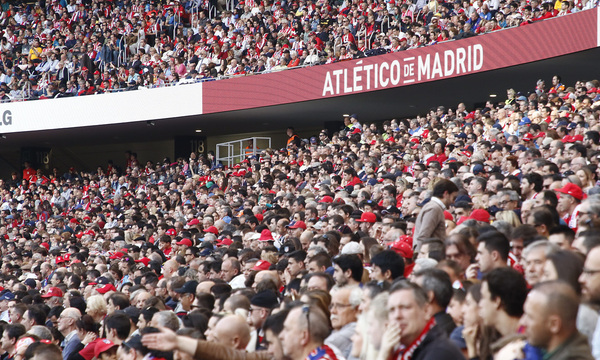
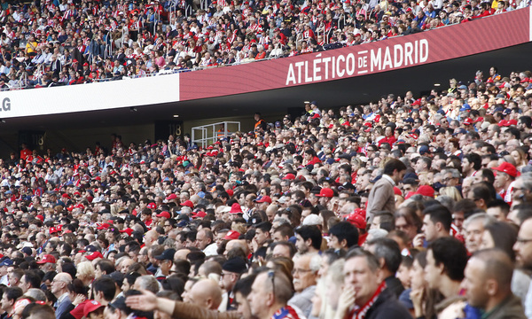

Atlético de Madrid
Mi equipo favorito
Mi equipo de fútbol favorito es el Atlético de Madrid, fundado en 1903 en Madrid y convertido con los años en uno de los grandes del fútbol español y europeo.
Breve historia
El club nació en 1903 como Athletic Club de Madrid y en las décadas de 1940, 1950 y 1970 ganó varias Ligas y Copas que lo consolidaron como club histórico. En la etapa reciente, con Diego Simeone como entrenador desde 2011, el equipo ha vuelto a pelear por todos los títulos, logrando Ligas en 2013‑14 y 2020‑21 y varios trofeos europeos.
Títulos destacados
- 11 Ligas españolas.
- 10 Copas del Rey.
- 3 Europa League (2010, 2012, 2018).
- 3 Supercopas de Europa.
Jugadores importantes
Entre las grandes figuras del club están Luis Aragonés, Adelardo, Fernando Torres y Antoine Griezmann, que representan distintas épocas y son referentes para la afición rojiblanca.
Imágenes históricas
 
